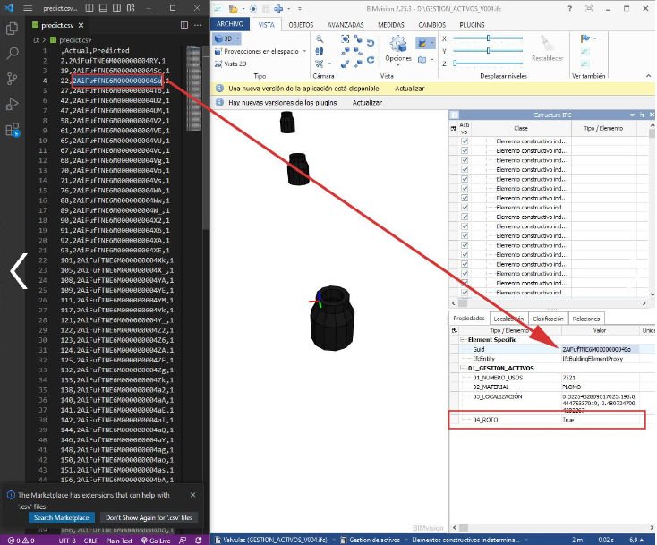
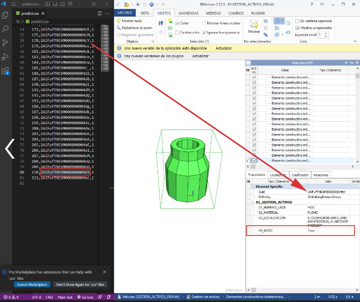

Sinergia BIM e IA.
Este es mi proyecto de formación sobre IA y Big Data. Lo dividiré en secciones e iré añadiendo información siguiente con mi formación en la materia.
Modelo de IA para predecir datos en modelos IFC.
En esta parte, he desarrollado un modelo de ML, en concreto, de aprendizaje supervisado que me permite predecir el valor de un dato concreto de un modelo IFC.
La Inteligencia Artificial está cambiando el panorama de la ingeniería civil y el desarrollo BIM! Estoy emocionado de compartir con ustedes un emocionante proyecto en el que he estado trabajando: un programa basado en Python que utiliza un modelo de regresión logarítmica para predecir la probabilidad de rotura de objetos en un modelo IFC.
¿Qué es un modelo de regresión logarítmica? Un modelo de regresión logarítmica es una técnica de aprendizaje automático utilizada para predecir una variable binaria, en este caso, si un objeto se va a romper o no. Su característica distintiva es que puede modelar relaciones no lineales entre las variables y producir una probabilidad continua en el rango de 0 a 1. Esto permite una predicción más precisa y confiable.
Entrenamiento del modelo de IA. Hemos entrenado nuestro modelo con un conjunto de datos robusto de más de 4000 objetos extraídos de un modelo IFC. Gracias a la naturaleza rica y diversa de este conjunto de datos, nuestro modelo ha adquirido la capacidad de generalizar y hacer predicciones precisas en nuevas situaciones.
Matriz de Confusión. Los resultados del modelo son realmente sorprendentes. La matriz de confusión muestra que nuestro programa tiene una precisión de identificación de objetos que no se romperán cercana al 80%. Además, el modelo presenta una probabilidad de acertar en objetos que se romperán superior al 65%. Esto indica una sólida capacidad de predicción y confiabilidad en nuestras estimaciones.
Listado de objetos en un CSV. El modelo de IA genera un listado en formato CSV de los objetos del modelo IFC que prevé que se van a romper. Gracias a las poderosas herramientas de IfcOpenShell, podemos trabajar directamente sobre estos objetos en el modelo IFC, lo que facilita la planificación y toma de decisiones en la gestión de activos.
Modelo completo:

Lista con los GUID de los objetos que el modelo predice:
